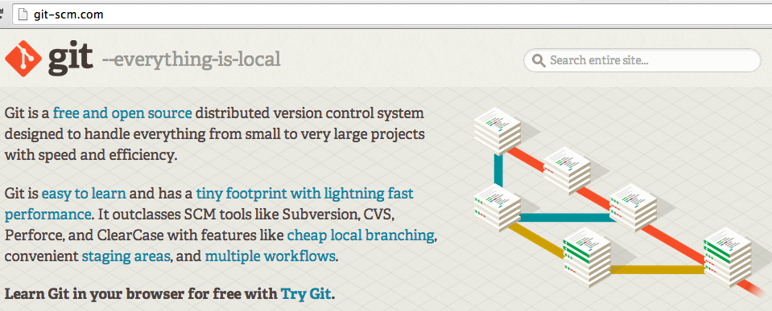
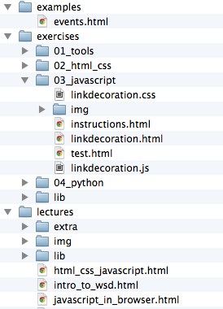
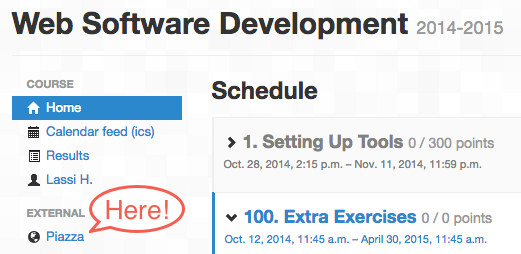

Lassi Haaranen
No recording please
"Student understands the distributed nature of a web application, session management and how the different parts of the application can communicate with each other. Student is able to design, implement, and deploy a small web application using a modern web application framework. Student knows how to test and debug a web application and has basic understanding of technologies and issues such as object relational mapping, security, efficiency, and scalability."
Skills
Knowledge
User <--> Browser <--> Web Service <--> Database
This course roughly deals with the area marked with green.
Intermediate programming course (experience with big enough personal project)
Databases You need to understand databases, but programming framework will handle most of the stuff.
Aalto University Code of Academic Integrity and Handling Violations Thereof
Responsible Teacher: Lassi Haaranen (lectures, exercises, exercise groups, exam, project grading).
Teaching Assistant: Teemu Lehtinen (exercises, exercise groups, project grading)
If you have general (or private) questions primarily post them to Piazza (more about that later), that will be easiest and fastest for you and for us.
There is no office hours, in case of private matters you can also email me lassi.haaranen@aalto.fi (be sure to put cse-c3210 in the title)
The course consists of lectures, exercises, exam, and a group project.
Personal exercises and exam is during the fall 2014.
Project is done in small groups during spring 2015.
Lectures during fall and spring.
Preliminary schedule for fall lectures
| Week 1 | Week 2 | Week 3 | Week 4 | Week 5 | Week 6 | |
|---|---|---|---|---|---|---|
| Tuesday | Course and WSD introduction | JavaScript | JavaScript in Browser | Django | Django forms | Sessions, Authentication |
| Wednesday | HTML & CSS | Intro to Python | MVC and Intro to Django | AJAX | Security | Testing, project kickoff |
Lecture topics for spring 2015 will be announced later.
Only this slide set will be posted to Noppa. Rest of the material is obtained from the course repository (explained later).
To create files for printing to pdf append ?print-pdf to the url
If you want to print to paper, you change
link.href = 'lib/reveal.js-2.6.2/css/print/pdf.css';// from
link.href = 'lib/reveal.js-2.6.2/css/print/paper.css'; //toIf you don't understand what those mean, don't worry. It will become clear.
More information about the slides and how to print them reveal.js
★
Specific terms and commands within the text will be marked with <code> element. Code samples look like this:
//JavaScript sample
alert("Hello World!");Slides are also color-coded. This slide has the default background. Colors roughly correspond to
HTML CSS JavaScript Python & Django
Earn extra points for the exam when slides are marked with a star (more on that later).
Extra material looks like this. They usually contain links to useful material that go beyond the course content.
Seven rounds of exercises covering five general topics:
At the very least you must pass one exercise round from each topic: Tools, HTML/CSS, JavaScript, Python, Django.
Passing all seven exercise rounds will give +1 towards the final course grade.
Failing to complete a round from each of the topic will result in a failing grade from the course.
There are exercise groups available every Wednesday after the lecture (14:15-16:00 T7/CS building) starting from tomorrow.
There is no mandatory attendance. The exercise group is there for you as a service to use if needed.
Sign up for the exam in Oodi. Passing the exam is mandatory, exam is graded fail, pass, pass +1.
Exam times: 18.12.2014 9.00-12.00 and 16.02.2015 13.00-16.00
During spring of 2015 there is a course project that is completed in groups of 3 people.
In the project you will create in teams a web service. The project topic and framework is set.
The project grading is as follows: fail, +1, +2, +3 to course grade. Note that this will contribute the most for your final grade, that is an indication where the largest work load is.
We'll talk more about this later.
Your final grade will the sum of your grades as follows:
Example:
| Area | Result | Effect on Grade |
|---|---|---|
| Exercises | Six rounds completed | +0 |
| Exam | Pass with +1 | +1 |
| Project | Completed with 2 | +2 |
| Course | 3 |
Exercises are done in A+
There are two types of exercises: multiple choice questions and git-exercises.
Multiple choice questions are answered in A+.
All other exercises apart from multiple choice ones are completed using git and submitted by entering your repository URL to A+.
"Can you email me the current home page html-file...?"
$ cd public_html
$ ls
May 15 20:24 index_old.html
Jul 14 23:10 index_NEW_LOGO.html
Jul 14 22:44 index_html_v1_final.html
Sep 12 09:44 index_old_OLD.html
Oct 14 22:44 index_html_v1_final_FINAL.html
Nov 15 16:10 index_html_old_v1_FINAL_OCTOBER_DRAFT.html
This is web software development course... And any software development without version control is not worth calling software development.

Git can be downloaded from http://git-scm.com. There is also a freely available book on the site. Sections 2.2, 2.3, 2.4, and 2.5 cover most of what is needed on the course.
You will first fork (once) the official material repository. Then you will clone it to your local computer. You work on exercises and commit your work locally. Then you will push those commits to your GitLab repository (and at this point you can submit your work in A+ to be graded).
Exercise instructions for the first round can be found in A+ and in the course repository.
The rest of the rounds will have instructions only in the repository.
Instructions to get you started with the course workflow are in A+ in the exercises Exercise 01 - Getting Started With GitLab and Exercise 02 - Getting Started With Git.
For more detailed instructions go to: https://plus.cs.hut.fi/
For more detailed instructions go to: https://plus.cs.hut.fi/
If your browser is relatively up to date this exercise can be completed without any additional browser extensions.
The idea is to get you acquainted with browser tools to inspect web pages.
It is a good idea to load the page with the browser tools open, so request and response content is stored.
If you do not have a recent browser, download one as soon as you can. It has been tested with recent versions of Chrome, Firefox, IE10+, and Opera. And Safari works too, but you need to manually enable the developer tools first.

This material will update throughout the course. More information on how to get the latest material will be discussed in future lectures.
This course uses Piazza, which is a question & answer site. Post problems there, and help out fellow students with answers. You can also the course staff there with private messages.

https://piazza.com/aalto.fi/other/csec3210/home
Preferred way to ask questions and get help is through Piazza (link on the left sidebar). Notice that if you log into Piazza your name and email address is transferred there. You can read Piazza's privacy policy here.
You can also get help in the exercise groups. Additionally there is an (unofficial) course IRC channel #wsd (IRCnet).
There are couple of ways to get extra points for the exam (valid only for December 2014 and February 2015 exams).
There are three main ways to gather extra points: Lecture Activity, Piazza Activity, and Slide Corrections. There are maximum amount of extra points you can collect from each category. Extra points are worth 0.1 exam points.
Lecture Activity, max 20 points, 2 for each lecture participated. Starting from tomorrow, bring laptop/smart phone/tablet to participate.Piazza Activity are active in Piazza by posting good questions and answers some extra points will be awarded. Max 10 points.Correcting Slides, if you find a clear mistake in the slides and submit a pull request that corrects it (remember clear commit message) and if it gets merged, 5 extra points will be awarded. Maximum of 10 points. Note: I will be picky!Get started with exercises in A+
Ask questions about the course in Piazza
Attend lectures on Tuesdays at 14:15-1600 in TU1 (TUAS Building) and on Wednesdays at 12:15-14:00 in T1 (CS Building)
Extra help is provided in the exercise group on Wednesdays at 14:15-16:00 in T7 (CS building)
Extra points for the exam are available if you participate in lecture activities, Piazza activity, and slide corrections